Computer software used to satisfy the needs of an organization rather than individual users and usually characterized by:
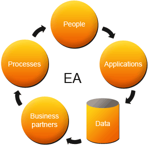
Persistent data - might need to persist for several years
High amounts of data - GBs of data in tens of millions of records
Use databases - mostly relational databases
Concurrent Access - data accessed by hundreds or thousands of people simultaneously
Interface Screens - dozens or hundreds of interface screens to handle all the data
Integration - they often integrate with other enterprise applications
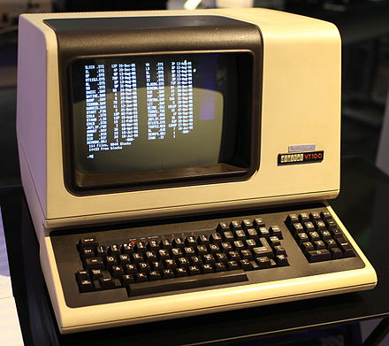
Terminal Architecture
The Terminal or Mainframe Architecture (aka teleprocessing) was dominant in the enterprise between the
1950s and the 1970s, and disappeared (sort of...) around the 1990s
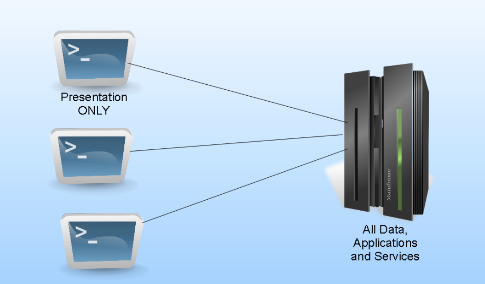
Mainframes and minicomputers executed all the applications logic in a centralized manner
Dumb Terminals (thin clients) displayed application screens coming from the server to the users
User keystrokes were captured and sent to the server
Deployment was extremely easy, just do it once at the server
Display capabilities were very limited
Client Server Architecture (Two-Tier)
The mass production and increasing power of the Personal Computers together with LAN technologies enabled
the Client-Server Architecture in the 1980s
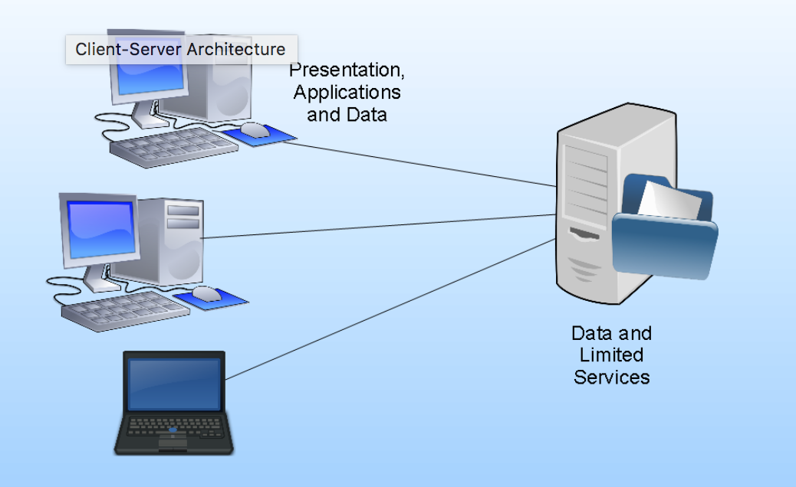
PCs (fat clients) were not limited anymore to the characters base user interface
Personal computers were powerful enough to run rich user interfaces instead of being run on the server
Ability to autonomously run business applications like word processors and spreadsheets
Servers provided shared Data Storage and limited services such as DBMSs
Deployment was complex, had to be done on all clients
Lots of server compatibility issues to support different client OSs and versions
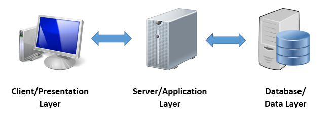
Three-Tier Architectures
The continued development of the Internet and improvements in network speed enabled the idea of programs that could be run across the Internet. To do this, new application tiers were created on top of the existing client-server model, giving rise to the multi-tier architecture in the early 2000s
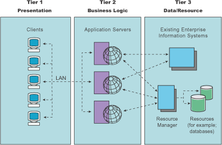
Responsibility for presentation and user interaction resides with the first-tier
Commonly referred to as the application logic layer, manages the business logic of the application and permits access to the third-tier services
Protected from direct access, interaction must occur through the second-tier processes
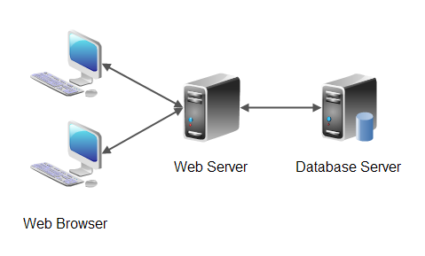
Thin Client Web Applications
Presentation layer now handled by the Web Browser
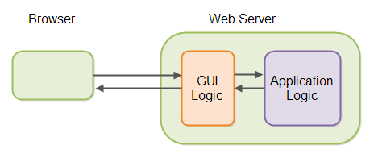
Most of the application logic went back to the server
Server generated HTML pages with application screens (GUI logic)
Client performed the rendering of the HTML and sent form responses back to the server
Deployment is easy again, application is updated only once at the server
Clients lack autonomy, they now have to perform server requests with each user action
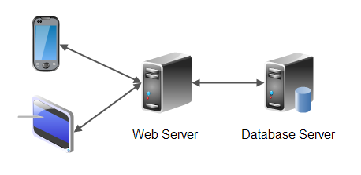
Thick Client Web Applications
Large improvement in JavaScript execution performance in all major browsers and the creation of advanced
JavaScript frameworks enabled the execution of all GUI logic at the client
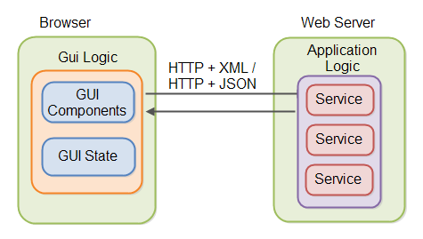
GUI logic is moved back to the client
Deployment remains easy, application is updated only once at the server and pushed to all clients through http
User experience improves without the need to reload the web page for each user action (SPA)
Web applications are now capable of displaying rich User Interfaces with desktop like capabilities
Serverless Architecture
Cloud computing technology brings a shift in the way systems are deployed
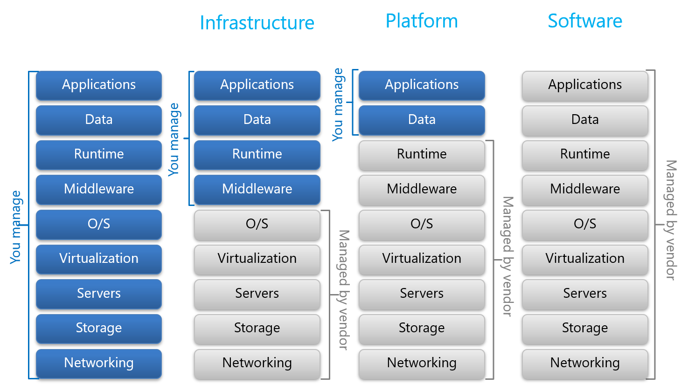
Depends on third-party services
Provides self-service capabilities with scalable features to upgrade based on requirement
Brings flexibility of budget, speed and infrastructure
Function as a Service - "on-demand" functionality
Application Layering
Layering is one of the most common techniques used to break apart a complicated software system
A single layer can be understood as a coherent whole without knowing much about the other layers
Layers can be substituted with alternative implementations of the same basic services
Dependencies between layers can be minimized, reducing the overall coupling in the system
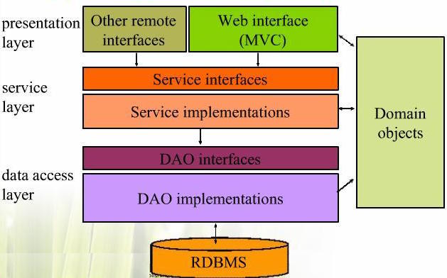
Service Layer
It is common to split the business logic between a Service Layer and a Domain Model
Transactional and secure operations for the Domain Model are normally provided by the Service Layer
Domain Model is the conceptual model of a system which describes the various entities involved and their relations
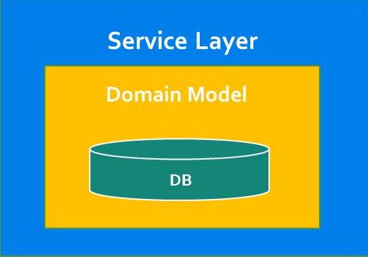
Transaction Handling
The most common transaction pattern is the Session-Per-Request:
A single session (EntityManager in JPA) will be used to process a single user event
Session scope is the same as Transaction scope
One-to-one relationship between the Transaction and the Session
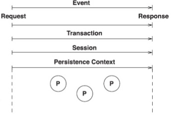
Within this pattern there is a common technique of defining a current session to simplify the need of passing this Session around to all the application components that may need access to it
Session Manager
Encapsulates the Session lifecycle management.
public class JpaSessionManager {
private EntityManagerFactory emf; // the persistence unit
private EntityManager em; // the persistence context
public void startSession() {
if (em == null) {
em = emf.createEntityManager();
}
}
public void stopSession() {
if (em != null) {
em.close();
}
em = null;
}
public EntityManager getCurrentSession() {
startSession();
return em;
}
}
Transaction Manager
Encapsulates common transaction operations.
public class JpaTransactionManager implements TransactionManager {
@Override
public void beginRead() {
sm.startSession();
}
@Override
public void beginWrite() {
sm.getCurrentSession().getTransaction().begin();
}
@Override
public void commit() {
if (sm.getCurrentSession().getTransaction().isActive()) {
sm.getCurrentSession().getTransaction().commit();
}
sm.stopSession();
}
@Override
public void rollback() {
if (sm.getCurrentSession().getTransaction().isActive()) {
sm.getCurrentSession().getTransaction().rollback();
}
sm.stopSession();
}
}
{ Exercise }
Add Session and Transaction Managers to the JavaBank application
Data Access Object
DAO is an important design pattern used at the persistence layer
Separates low level data access from high level business services
Handles data access and manipulation from the persistence storage (db, ldap, file system, etc.)
Decouples the persistent storage implementation from the rest of the application
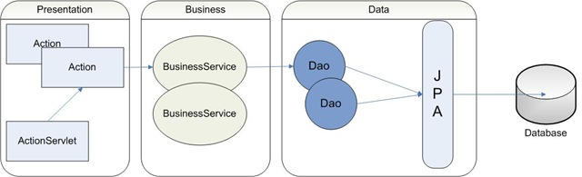
Data Access Objects
At the core of the DAO pattern is a Java interface which defines various methods to perform data access
Different implementations of this interface can be created to accommodate multiple persistence mechanisms, e.g. JdbcDAO or HibernateDAO
Domain objects or Service layer can interface with the data layer with no knowledge of the low level persistence APIs
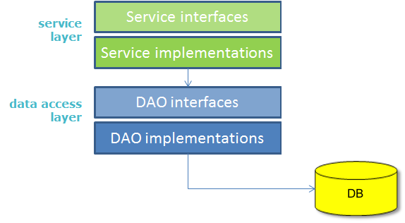
Transaction management should be handled at the Service Layer, allowing one transaction to span operations on multiple DAOs
DAO Methods
DAO should provide methods for implementing CRUD operations as well as any other required data access operations
public interface UserDao {
// basic crud methods
List<User> findAll();
User findById(Integer id);
User saveOrUpdate(User user);
void delete(Integer id);
// additional methods
User findByUsername(String username);
User findByEmail(String email);
}
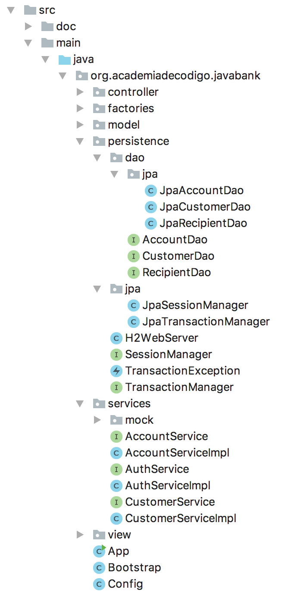
{ Exercise }
Decouple the Service Layer from the persistence api on the JavaBank application using the Dao design pattern
Generic Dao
The basic Dao interface crud methods should be common to all DAOs and hence placed in a Generic DAO object
More specific Dao objects can extend from this generic dao to provide additional data query capabilities
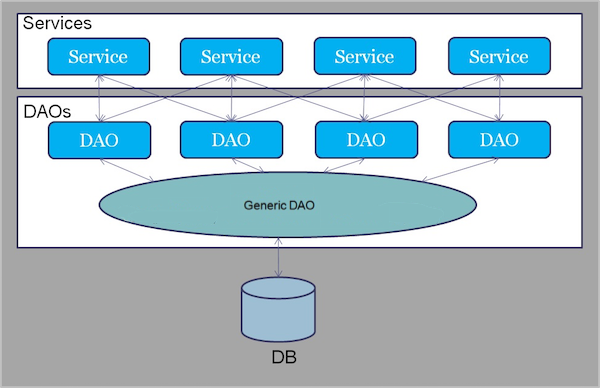
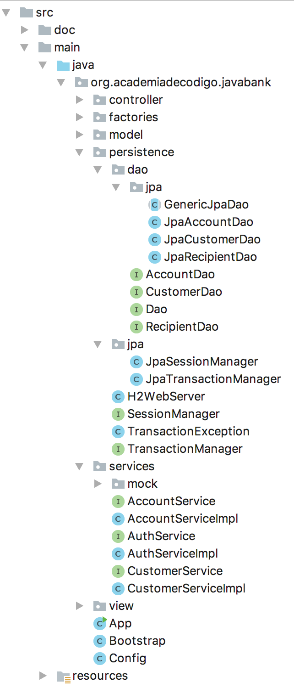
{ Exercise }
Implement the Generic Dao on the JavaBank application